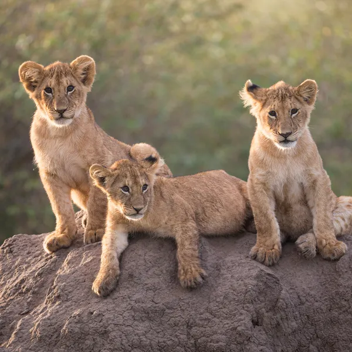
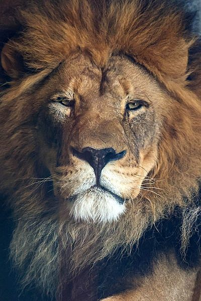

my web page
animal
Animals get their energy from other living things. Usually, they eat them or are parasites. Animals, plants, fungi, and some other living things have complex cells, so they are grouped together as eukaryotes.
The study of animals is called zoology.[1][2][3] The study of ancient life is called palaeontology.
Most animals are mobile, meaning they can move around. Animals take in oxygen, and give out carbon dioxide.[4] This cellular respiration is part of their metabolism (chemical working). In both these ways they are different from plants. Also, the cells of animals have different cell membranes to other eukaryotes like plants and fungi.
There are many different types of animals. The common animals most people know are only about 3% of the animal kingdom. When biologists look at animals, they find things that certain animals have in common. They use this to group the animals in a biological classification. Several million species may exist, but biologists have only identified about one million.
Animals can mainly be divided into two main groups: the invertebrates and the vertebrates. Vertebrates have a backbone, or spine; invertebrates do not. Vertebrates are the only group to have an adaptive immune system, which may be partly responsible for their size and success
The animal mode of nutrition is called heterotrophic because they get their food from other living organisms. Some animals eat only plants; they are called herbivores. Other animals eat only meat and are called carnivores. Animals that eat both plants and meat are called omnivores. Some animals get their energy from photosynthetic protists that live inside them.
The environments animals live in vary greatly. By the process of evolution, animals adapt to the habitats they live in. A fish is adapted to its life in water and a crab is adapted to a life catching and eating insects. A mammal living on the savannahs of East Africa lives quite a different life from a dolphin or porpoise catching fish in the sea.
The fossil record of animals goes back about 600 million years to the Ediacaran period, or somewhat earlier.[7] During the whole of this long time, animals have been constantly evolving, so that the animals alive on Earth today are very different from those on the edges of the sea-floor in the Ediacaran.
List of animal phyla is a list of the major groups of animals usually classified as a phylum. Modern sources have been used: the list is different from that of Linnaeus or Cuvier. A list of this type may be arranged alphabetically; equally it might be arranged according to evolutionary relationships. No list will be completely satisfactory. Authorities differ in what they consider a phylum, and in the actual name of the phylum. Independence of some phyla is still uncertain as well. Despite this, there is agreement on most phyla. Rarely a living clade do not fit a phyla. Most modern surveys include groups above the phylum, based on evidence of common descent.


- lion
- tiger
- elephant
- hina
- cheetha
- zibra
- girrafi
- monkey
- hippo
- deer
Birds
Birds are vertebrate animals constituting the class Aves, characterised by feathers, toothless beaked jaws, the laying of hard-shelled eggs, a high metabolic rate, a four-chambered heart, and a strong yet lightweight skeleton. They are warm-blooded, live worldwide, and range in size from the 5.5 cm (2.2 in) bee hummingbird to the 2.8 m (9 ft 2 in) common ostrich. There are over 11,000 living species of birds, classified in 44 orders. More than half of the world's bird species are passerine or "perching" birds. Nearly all birds have wings whose development varies according to the life style of each species. Wings, which are modified forelimbs, gave birds the ability to fly, although further evolution has led to the loss of flight in some birds, including ratites, penguins, and diverse endemic island species. The only known groups without wings are the extinct moa and elephant birds. Birds are the only extant members of Dinosauria, and are a type of paravian theropods. The digestive and respiratory systems of birds are uniquely adapted for flight. Some bird species of aquatic environments, particularly seabirds and some waterbirds, have further evolved for swimming. The study of birds is called ornithology.
Birds evolved from earlier theropods, and thus constitute the only known living dinosaurs. Whilst traditional Linnaean taxonomy placed birds in their own class (owing to their unique morphology and being the only group of animals other than mammals where all its species are warm-blooded), birds are considered reptiles in the modern cladistic sense of the term. Their closest living relatives are the crocodilians, with which they form a clade known as archosaurs. Birds are descendants of the primitive avialans (whose members include Archaeopteryx) which first appeared during the Late Jurassic. According to some estimates, modern birds (Neornithes) evolved in the Late Cretaceous or between the Early and Late Cretaceous (100 Ma) and diversified dramatically around the time of the Cretaceous–Paleogene extinction event 66 million years ago, which killed off the pterosaurs and all non-ornithuran dinosaurs.
Many social species preserve knowledge across generations (culture). Birds are social, communicating with visual signals, calls, and songs, and participating in such behaviour as cooperative breeding and hunting, flocking, and mobbing of predators. The vast majority of bird species are socially (but not necessarily sexually) monogamous, usually for one breeding season at a time, sometimes for years, and rarely for life. Other species have breeding systems that are polygynous (one male with many females) or, rarely, polyandrous (one female with many males). Birds produce offspring by laying eggs which are fertilised through sexual reproduction. They are usually laid in a nest and incubated by the parents. Most birds have an extended period of parental care after hatching.

- crow
- parrot
- dove
- bat
- eagle
- sparrow
- kingfisher
- woodpekker
- swan
- duck
foods
Food is any substance that is consumed by an organism for nutritional support. Food usually consists of plant, animal, or fungal origin and contains essential nutrients such as carbohydrates, fats, proteins, vitamins, or minerals. The substance is ingested by an organism and assimilated by the organism's cells to provide energy, maintain life, encourage physical requirements, and support growth. Different species of animals have different feeding behaviours that satisfy the needs of their metabolisms and have evolved to fill specific ecological niches within specific geographical contexts.
Omnivorous humans are highly adaptable and have adapted to obtaining food in many different ecosystems. Humans generally use cooking to prepare food for consumption. The majority of the food energy required is supplied by the industrial food industry, which produces food through intensive agriculture and distributes it through complex food processing and food distribution systems. This system of conventional agriculture relies heavily on fossil fuels, which means food and agricultural systems are one of the major contributors to climate change, accounting for as much as 37% of total greenhouse gas emissions.
The food system has a significant impact on a wide range of other social and political issues, including sustainability, biological diversity, economics, population growth, water supply, and food security. Food safety and security are monitored by international agencies, like the International Association for Food Protection, the World Resources Institute, the World Food Programme, the Food and Agriculture Organization, and the International Food Information Council.
Food is any substance consumed to provide nutritional support and energy to an organism.[2][3] It can be raw, processed, or formulated and is consumed orally by animals for growth, health, or pleasure. Food is mainly composed of water, lipids, proteins, and carbohydrates. Other organic substances (e.g., vitamins) and minerals (e.g., salts) can also be found in food. Plants, algae, and some microorganisms use photosynthesis to make some of their own nutrients.[5] Water is found in nearly all foods and has been defined as food by itself.[6] Water has no food energy, and fibers have low energy densities, or food energy relative to volume, some providing none, while fat is the most energy-dense component.[3] Some inorganic substances are also essential for plant and animal functioning
Human food can be classified in various ways, either by related content or by how it is processed.[8] The number and composition of food groups can vary. Most systems include four basic groups described by their origins and relative nutritional funitions: vegetables and fruit, cereals and bread, dairy, and meat. Studies that look into diet quality group food into whole grains, refined grains, vegetables, fruits, nuts, legumes, eggs, dairy products, fish, red meat, processed meat, and sugar-sweetened beverages.[10][11][12] The Food and Agriculture Organization and World Health Organization use a system with eighteen or nineteen[a] food classifications, including: cereals and their products; roots, tubers, plantains and their products; pulses, seeds and nuts and their products; milk and milk products; eggs and their products; fish, shellfish and their products; meat and meat products; insects, grubs and their products; vegetables and their products; fruits and their products; fats and oils; sweets and sugars; spices and condiments; beverages; foods for particular nutritional uses; food additives; composite dishes; and savory snacks.[13]


- biriyani
- chicken biriyani mutton biriyani beaf biriyani
- meals
- curdrice rice
movie
A movie or film is a type of visual art that uses images and sounds to tell stories, express ideas, or teach people something. Most people watch movies to entertain themselves or to have fun. Movies can vary significantly in emotional tone both overall as a specific genre type but also within a single work. Some of the most typical approaches are to make people laugh (comedy), make them cry (tragedy or drama), or make them feel afraid (horror). However, there are also movies that combine genres, like horror-comedy.
Most movies are made so that they can be watched at home or on a movie screen at movie theaters. Movies are shown in movie theaters a few weeks or months after or before the movie is released. Movies can be marketed using media. Movies are shown on paid television or cable television or are sold or rented on DVD disks or videocassette tapes so that people can watch the movies at home. Movies can also be downloaded or streamed. Some movies are shown on television broadcasting stations.[source?]
Movies are filmed with movie cameras or video cameras. Movie cameras take pictures very quickly, usually 24 or 25 pictures or frames every second. When a movie projector, a computer, or a television shows the pictures at 24 frames a second, it looks like the things shown in the set of pictures are moving. Sound is usually recorded at the same time as the pictures are, but sometimes, they are added later. The sounds in a movie are usually people talking, the soundtrack, and sound effects. In the 20th century, the camera used photographic film.
Most movies start to be made when a screenwriter writes a script, which is the story of the movie with dialogue and words and things that the actors will say and do. A producer hires people to work on the movie and gets the money that will be used to pay for the actors, or actresses, and the equipment. Producers usually get the money by borrowing it from a bank or by asking investors to give money to them. Some producers work for a movie studio, but other producers work by themselves.[source?]
Actors, or actresses, and directors read scripts to learn what to say and what to do. The actors learn the words from the script that they will say in the movie and learn the things that the script tells them to do. Then, the director tells the actors what to do and a cameraman takes the film of them saying the words with a film camera.
When the filming is done, an editor makes the film play after each other, which makes a story. Audio engineers and sound engineers record music and singing and combine it with the film. When the movie is done, many copies of the movie are made by movie labs and put onto film reels. Then, the reels are sent to movie theaters. A projector shines a very bright light through the film, and people sitting in a dark room see it on a big screen.

links of 5 movie